PROJETOS
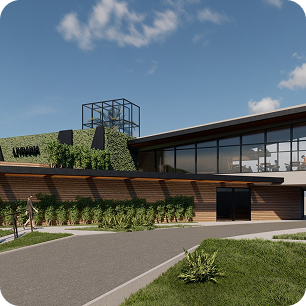
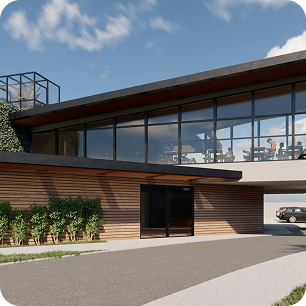
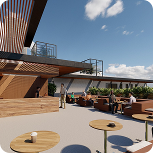
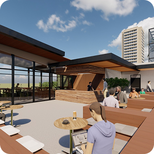
- Livraria: A fachada tem uma grande vitrine com prateleiras de livros visíveis externamente, tornando a leitura o destaque visual do espaço.
- Coworking: O andar superior, com amplas janelas de vidro e um design flutuante, oferece um ambiente iluminado e inspirador para trabalho compartilhado.
- Cafeteria: O espaço lateral e interno da construção parece destinado a uma cafeteria, criando um ambiente convidativo para clientes que desejam ler,
estudar ou trabalhar enquanto desfrutam de um café. - Sustentabilidade: Elementos verdes na fachada e no telhado sugerem um conceito ecológico, trazendo conforto térmico e integração com a natureza.
- Acessibilidade: A rampa de acesso reforça a preocupação com a inclusão, garantindo que todos possam aproveitar o espaço.
- Estética Moderna: O uso de madeira, vidro e vegetação cria um visual contemporâneo e sofisticado, tornando o ambiente convidativo e inovador.
Elementos do Projeto:
Destaques Arquitetônicos:
Este é um excelente exemplo de como um espaço pode unir cultura,
trabalho e lazer em um único local, promovendo uma experiência completa para os usuários.
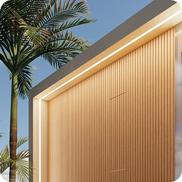
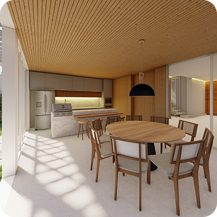
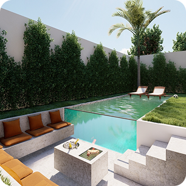
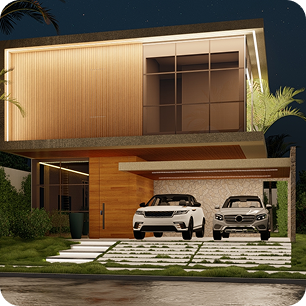
- Fachada imponente: O volume superior com amplas janelas de vidro traz leveza ao projeto, contrastando com os elementos de madeira e pedra que garantem um toque acolhedor e sofisticado.
- Iluminação indireta: O uso de luzes embutidas realça a arquitetura e cria um ambiente elegante, valorizando os detalhes da construção.
- Garagem coberta: O espaço para veículos está integrado ao design da casa, proporcionando funcionalidade e proteção.
- Estilo contemporâneo: Linhas retas, integração de materiais naturais e grandes panos de vidro garantem um visual moderno e refinado.
- Integração com a natureza: A presença de jardins, gramado e palmeiras ao redor da construção reforça a harmonia entre arquitetura e meio ambiente.
- Privacidade e sofisticação: A combinação de muros altos com a fachada envidraçada permite a entrada de luz natural sem comprometer a privacidade dos moradores.
Elementos do Projeto:
Destaques Arquitetônicos:
Essa casa é um excelente exemplo de arquitetura residencial
de alto padrão, unindo estética, funcionalidade e conforto.
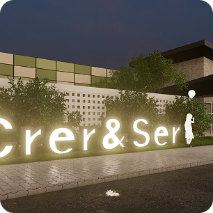
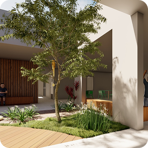
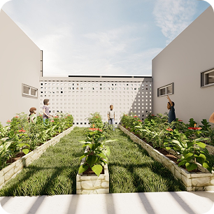
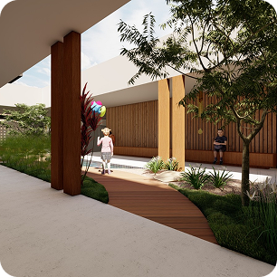
- Fachada acolhedora: O uso de materiais como tijolos aparentes, painéis coloridos e elementos vazados cria uma estética moderna e convidativa.
- Paisagismo integrado: O verde ao redor da construção reforça uma atmosfera tranquila e estimulante para as crianças.
- Identidade visual forte: O letreiro iluminado "Crer & Ser" na entrada destaca o propósito do espaço e transmite uma mensagem de positividade e inclusão.
- Acessibilidade: A entrada ampla e os espaços integrados indicam um design pensado para garantir mobilidade e conforto para todas as crianças.
- Iluminação e ventilação naturais: O uso de grandes janelas e elementos vazados permite a entrada de luz e circulação de ar, criando um ambiente saudável.
- Cobertura dinâmica: O telhado inclinado adiciona um toque moderno e proporciona uma sensação de amplitude ao espaço interno.